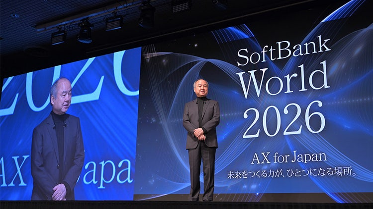

목소리
손정의 특별강연
ASI ECONOMY

ASI(Artificial Superintelligence, 인공초지능)는 거의 모든 지적 과제에서 인간의 능력을 넘어서는 AI를 뜻합니다. 손정의가 그리는 ASI Economy와 에이전트, 휴머노이드, 전력과 연산 인프라의 미래를 읽습니다.
- 제공 전사 범위
- 0:17–1:05:35
- 구성
- 08 CHAPTERS
- 전사 구간
- 484 SEGMENTS
CARROT CAVE INSIGHTS
편집자 요약 — 아래는 강연의 핵심 관점을 정리한 내용이며 직접 인용이 아닙니다.
- 비전은 AI가 중요하다는 선언이 아니라, 목표 연도와 규모를 정하고 현재의 투자로 역산하는 일이다.
- 에이전트와 휴머노이드의 확산은 소프트웨어 수요를 넘어 전력과 연산 인프라의 규모를 바꾼다.
- ASI 경제의 수익 전망과 인프라 투자는 분리된 숫자가 아니라 서로를 지탱하는 가정이다.
- AI 도입의 성과는 도입 여부보다 생산성과 수익의 변화, Return on AI로 평가해야 한다.
- 경쟁의 단위는 AI와 인간만이 아니라 AI를 활용하는 기업과 그렇지 않은 기업이다.
출처와 번역 안내
- 강연자: 손정의 · SoftBank World 2026 특별강연
- 번역 원자료: 일본어 전사문을 바탕으로 옮긴 한국어 번역.
- 범위: 제공된 484개 전사 구간, 0:17–1:05:35부터 시작하는 마지막 발언까지. 공식 YouTube 메타데이터 기준 영상 길이는 1:06:15, 업로드 날짜는 2026-09-01입니다.
- 공식 영상: YouTube 원본 강연
- 관련 공식 리포트: SoftBank 공식 리포트 · 2026-07-16은 이 리포트의 게시일이며 영상 업로드 날짜가 아닙니다.
- 한국어 전체 번역 다운로드 (.md) · 사용자 제공 일본어 원전사 다운로드 (.md)
한국어 전체 번역 전사
한국어 전체 번역 전사를 불러오는 중입니다.
번역 전사를 불러오지 못했습니다. 잠시 후 다시 시도하거나 위의 공식 영상·다운로드 링크를 확인해주세요.